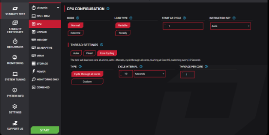

#
occt
|
Teste de estabilidade da CPU no OCCT com ciclo por núcleo (Core Cycling).
OCCT

1. Instruções
- Aplicativo (OCCT) Executar como Administrador
- Navegação Selecionar a aba Stability Test → CPU
2. Configuração da CPU
- MODE Normal
- LOAD TYPE Variable
- START AT CYCLE 1
- INSTRUCTION SET Auto
3. Thread Settings (Core Cycling)
- TYPE Cycle through all cores
- CYCLE INTERVAL 10 seconds
- THREADS PER CORE 1
4. Resultado esperado
- Teste de 1 hora 0 erros